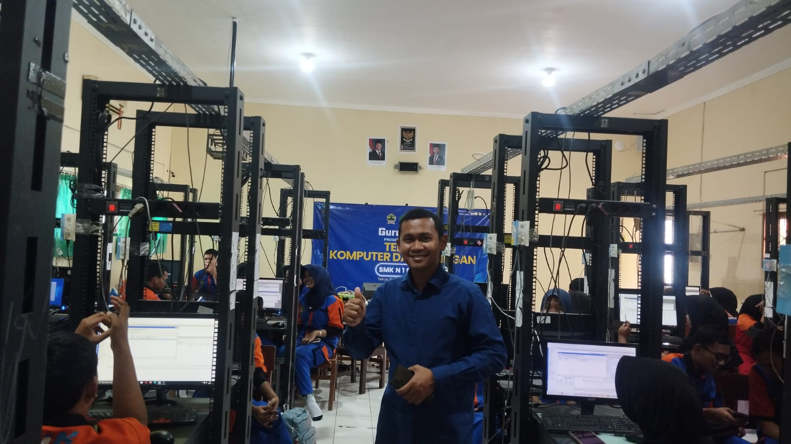
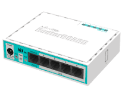
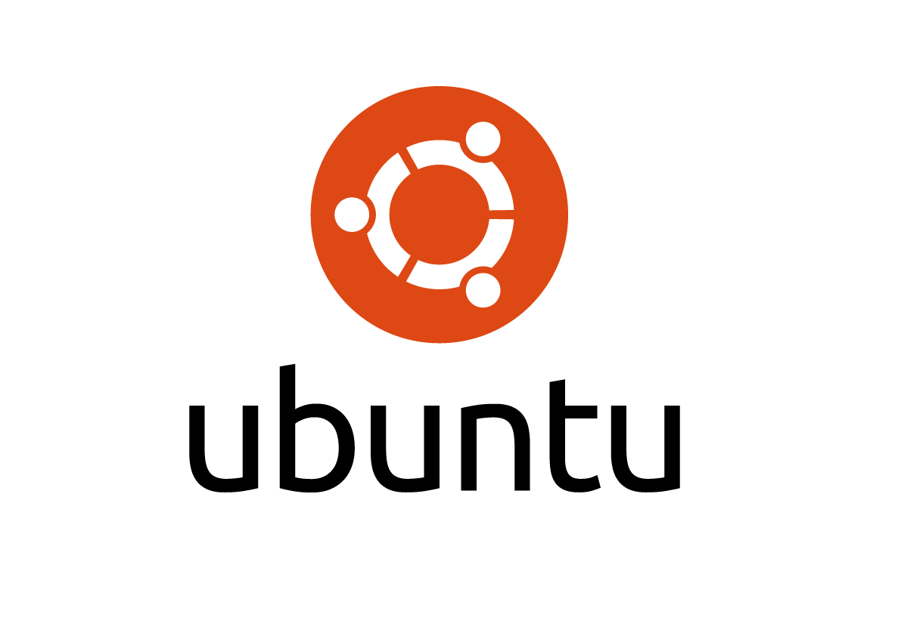

Apa saja yang kamu pelajari selama 3 tahun?

 |
1. MikrotikFokus kepada pembelajaran konfigurasi jaringan memalui media Winbox. |
2. CiscoFokus kepada pembelajaran konfigurasi router dan switch menggunakan Cisco Packet Tracer. |
|
 |
3. Administrasi ServerFokus kepada pembelajaran instalasi dan pengelolaan server, seperti web server, DNS, dan DHCP. |